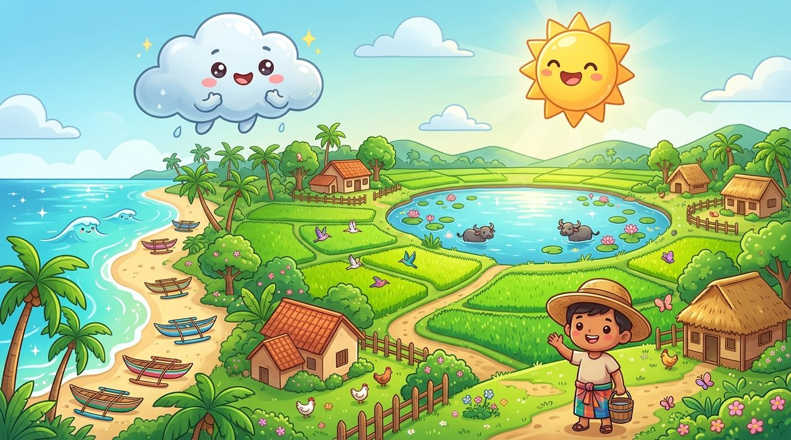
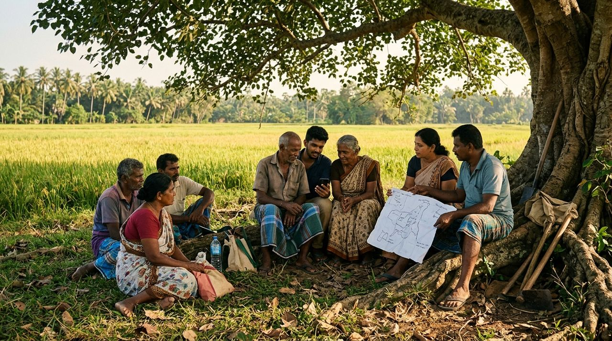
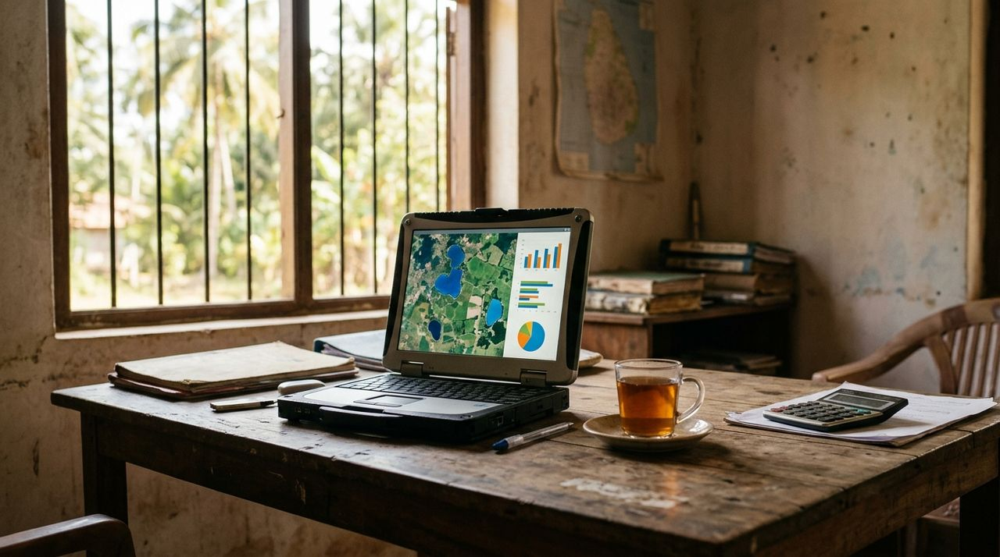

Your season's direction, read from space.
Where would you like to go?
Choose the part that fits you. Every part uses the same NASA data and weather forecasts.
I am a farmer
Is my tank full? What should I sow? Will it rain today?
Open
I want to learn and play
Lessons, games, badges and a certificate about water, farming and our climate.
Open
I am an officer or instructor
One dashboard for every tank: water, rain, greenness and alerts, with downloads and printed reports.
Open
I want to see the method and data
Data sources, accuracy tests, crop numbers with their sources, and data downloads.
OpenI am planning a trip or an event
Rain chance, heat and the best days at any place in Sri Lanka.
Open